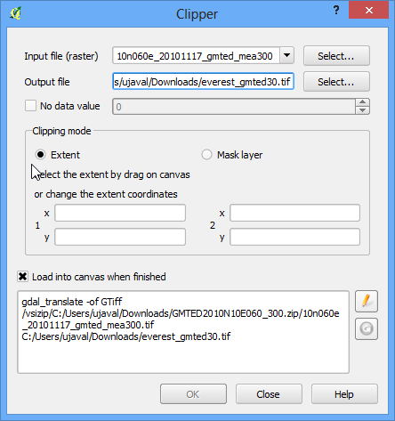
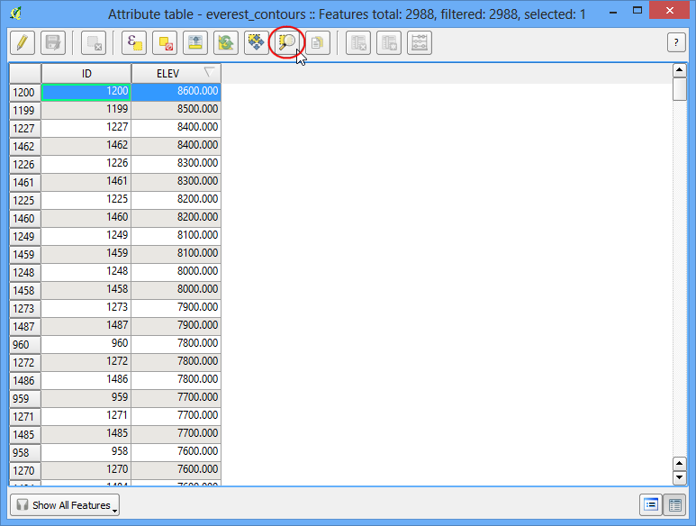
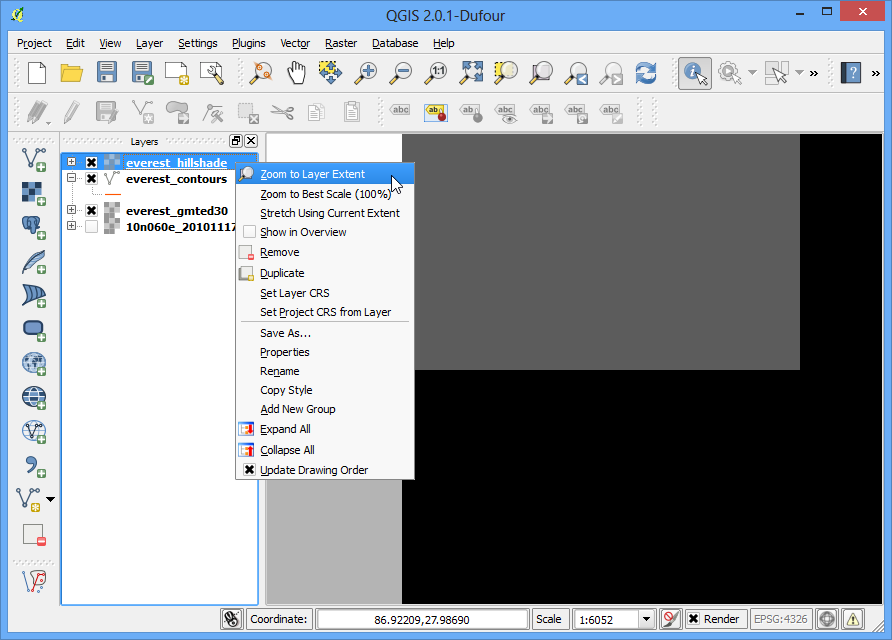

Working with Terrain Data
Terrain or elevation data is useful for many GIS Analysis and it is often used
in maps. QGIS has good terrain processing capabilities built-in. In this
tutorial, we will work through the steps to generate various products from
elevation data such as contours, hillshade etc.
Overview of the task
The task is to create contours and hillshade map for area around Mt. Everest.
Other skills you will learn
- Searching and downloading freely available terrain data.
- Exporting a vector layer as KML and viewing it in Google Earth.
Get the data
We will be working with GMTED2010 dataset from USGS. This data can be
downloaded from the USGS Earthexplorer site. GMTED (Global Multi-resolution
Terrain Elevation Data) is a global terrain dataset that is the newer version
of GTOPO30 dataset.
Here is how to search and download the revelant data from USGS Earthexplorer.
- Go to the USGS Earthexplorer . In the
Search Criteria tab, search for the place name Mt. Everest.
Click on the result to select the location.

- In the Data Sets tab, expand the Digital Elevation
group, and check GMTED2010.

- You can now skip to the Results tab and see the part of the
dataset intersecting your search criteria. Click the Download
Options button. You will have to log in to the site at this point. You can
create a free account if you do not have one.

- Select the 30 ARC SEC option and click Select
Download Option.

You will now have a file named GMTED2010N10E060_300.zip. Elevation data is
distributed in various raster formats such as ASC, BIL, GeoTiff etc.
QGIS supports a wide variety of raster formats via the GDAL library. The GMTED
data comes as GeoTiff files which are contained in this zip archive.
For convenience, you can download a copy of the data directly from below.
GMTED2010N10E060_300.zip
Data Source: [GMTED2010]
Procedure
- Open and browse to the
downloaded zip file.

- There are many different files generated from different algorithms.
For this tutorial, we will use the file named 10n060e_20101117_gmted_mea300.tif.

- You will see the terrain data rendered in the QGIS Canvas. Each pixel in the
terrain raster represents the average elevation in meters at that location.
The dark pixels represent areas with low altitude and lighter pixels
represent areas with high altitude.

- Let’s find our area of interest. From Wikipedia,
we find that the coordinates for our area of interest - Mt. Everest - is located
at the coordinates 27.9881° N, 86.9253° E. Note that QGIS
uses the coordinates in (X,Y) format , so you must use the coordinates as
(Longitude, Latitude). Paste 86.9253,27.9881 these at the bottom of QGIS
window where it says Coordinate and press Enter. The viewport will be
centered at this coordinate. To zoom in, Enter 1:1000000 in the Scale field
and press Enter. You will see the viewport zoom to the area around the
Himalayas.

- We will now crop the raster to this area of interest. Select the Clipper
tool from .
Muista
The Raster menu in QGIS comes from a core plugin called
GdalTools. If you do not see the Raster menu, enable
the GdalTools plugin from . See Liitännäisiä käyttämään for more details.

- In the Clipper window, name your output file as
everest_gmted30.tif. Select the Clipping mode as
Extent.

- Keep the Clipper window open and switch to the main QGIS
window. Hold your left mouse button and draw a rectangle covering the full
canvas.

- Now back in the Clipper window, you will see the coordinates
auto-populated from your selection. Make sure the Load into
canvas when finished option is checked, and click OK.

- Once the process finishes, you will see a new layer loaded in QGIS. This
layer covers only the area around Mt. Everest.Now we are ready to generate
contours. Select the contour tool from .

- In the Contour dialog, select everest_gmted30 as the
Input file. Name the Output file for contour lines
as everest_countours.shp. We will generate contour lines for 100m
intervals, so put 100 as the Interval between contour lines.
Also check the Attribute name option so elevation value will be
recorded as attribute of each contour line. Click OK.

- Once the processing is complete, you will see contour lines loaded into the
canvas. Each line in this layer represents a particular elevation. All
points along a countour line in the underlying raster would be at the same
elevation. The closer the lines, the steeper the slope. Let’s inspect the
contours a bit more. Right click on the contours layer and choose
Open Attribute Table.

- You will see that each line feature has an attribute named ELEV.
This is the height in metres that each line represents. Click on the column header
a couple of times to sort the values in descending order. Here you will
find the line representing the highest elevation in our data, i.e. Mt.
Everest.

- Select the top row, and click on the Zoom to selection
button.

- Switch to the main QGIS window. You will see the selected contour line
highlighted in yellow. This is the area of the highest elevation in our dataset.

- Now let us create a hillshade map from the raster. Select
.

- In the DEM (Terrain Models) dialog, choose everest_gmted30 as
the Input file. Name the Output file as
everest_hillshade.tif. Choose Hillshade as the
Mode. Leave all other options as is. Make sure the Load into
canvas when finished option is checked, and click OK.

- Once the process finishes, you will see yet another raster loaded into QGIS
canvas. Since you maybe zoomed-in near the Mt.Everest region, right click
on the everest_hillshade layer and choose Zoom to Layer
Extent.

- Now you will see the full extent of the hillshade raster.

- You can also visualize your contour layer and verify your analysis
by exporting the contours layer as KML and viewing it in Google Earth.
Right click on the contours layer, select Save as...

- Select Keyhole Markup Language [KML] as the
Format. Name your output as contours.kml and click
OK.

- Browse to the output file on your disk and double-click on it to open Google Earth.